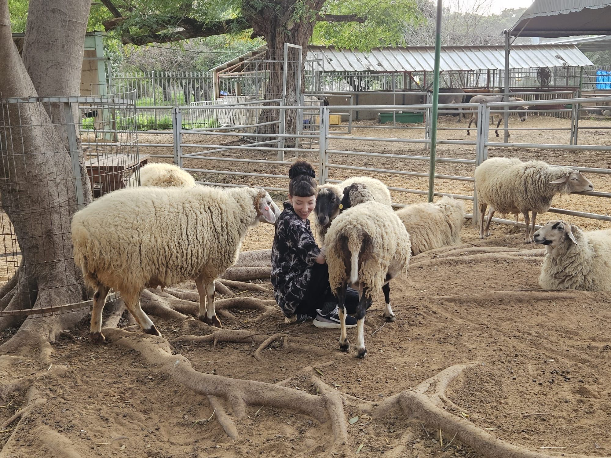

After studying textile design at Shenkar, I managed an artist's gallery, worked in social media, and later became a content editor.
Over time, I found myself more interested in how people understood and used things than in the visual layer alone. That led me to study UX/UI and join a design agency, where I worked across healthcare, banking, drone technology, and corporate training.
I eventually wanted to stay with products beyond launch and see how they evolved. I moved in-house and have since designed across a wide range of web and mobile products.
When I'm not working, I'm usually volunteering at an animal sanctuary, drawing, or making natural products as a certified aromatherapist.
